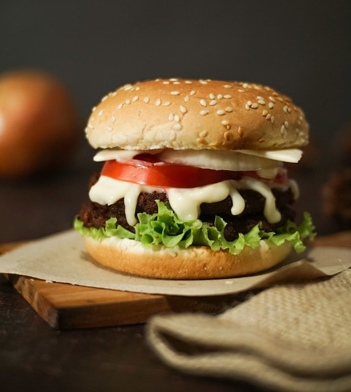

Classic Hamburgers

Description
Prepare to embark on a culinary adventure with our mouthwatering hamburger creation, where every bite is a symphony of flavor and texture. At the heart of this culinary delight lies a juicy, handcrafted patty, expertly seasoned and grilled to perfection. Each bite reveals a tantalizing blend of savory beef, seared to a mouthwatering caramelized crust on the outside while remaining tender and succulent within.
Accompanying this star ingredient are layers of fresh, crisp vegetables, including crisp lettuce leaves, ripe tomato slices, and thinly sliced red onions, providing a burst of color and freshness with every bite. For an extra kick of flavor, we add a generous smear of tangy, house-made burger sauce, crafted from a secret blend of spices and condiments, lending a perfect balance of sweetness, tanginess, and umami richness.
Shopping List

Take out your pen and paper or your favorite notetaking App and jot this down. You'll need:
- Ground beef
- Lettuce leaves
- Tomato
- Red onion
- Burger buns
- Cheese (cheddar or mozzarella)
- Burger sauce ingredients (e.g., ketchup, mayonnaise, mustard, pickles)
- Optional toppings (such as avocado or caramelized onions)
How To Prepare
- Prepare the Burger Patties:
- Divide the ground beef into equal portions and shape them into patties.
- Season the patties generously with salt and pepper on both sides.
- Preheat a grill or skillet over medium-high heat.
- Cook the patties for 3-4 minutes per side, or until they reach your desired level of doneness.
- Prepare the Burger Sauce:
- In a small bowl, mix together ketchup, mayonnaise, mustard, and finely chopped pickles to create the burger sauce.
- Assemble the Hamburgers:
- Toast the burger buns lightly on the grill or in a toaster.
- Spread a generous amount of burger sauce on the bottom half of each bun.
- Layer lettuce leaves, tomato slices, and red onion rings on top of the sauce.
- Place the cooked burger patties on top of the vegetables.
- Top each patty with a slice of cheese.
- Optional: Add any additional toppings, such as avocado or caramelized onions.
- Cover with the top half of the burger bun.
- Serve the hamburgers immediately, accompanied by your favorite side dishes like fries or salad. Enjoy!
See also